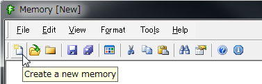

4.2.9. Create a New Memory¶
To create a new memory, select File ‣ New ‣ New Memory from the menu.
Alternately, you can use the Ctrl+N keyboard shortcut, or the Toolbar command.

A new memory is created and set as the active memory.
Tip
Felix allows you to have any number of memories open at one time. You can also load memories from files (see Open a Memory), or connect to memories over the local network on a Memory Serves server (see Connect to a Memory on the Server).